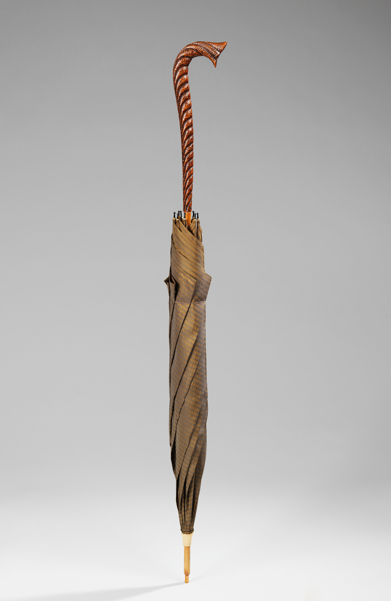
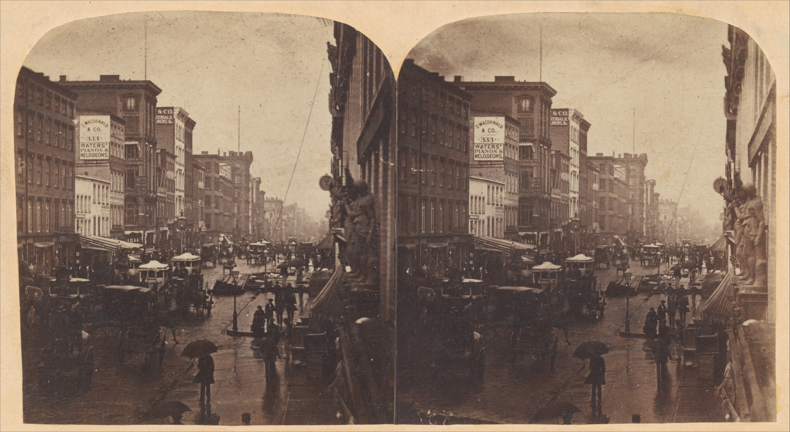

十五分钟一格
预报按 15 分钟切，不按小时估。雨什么时候加大、什么时候停，都落在格子上。
15:00 → 18:00，一格 15 分钟
雨正在下，伞带着。
预报按 15 分钟切，不按小时估。雨什么时候加大、什么时候停，都落在格子上。
天河、越秀、海珠各有一份自己的时间表。越秀的雨比天河晚一刻钟到，那不是误差，是位置。
要带伞吗，几点出门。不问你去哪，不猜你喜欢什么，不写第三条建议。
一百五十年前，雨落在同样的瓦上。我们只是把它量得更细一点，别的没变。
上海，1869 年，约翰·汤普森摄 · 大都会艺术博物馆，公有领域

天河、越秀、海珠，各有一份 15 分钟预报。同城不同区，雨到的时间不一样。
十二格，一格 15 分钟。柱子是雨强，空的是干；柱子在哪儿抬头，就该带伞。
给一个窗口，一句话，不写别的。

不会。没有广告位，没有账号，也不读你的精确定位；选过的街记在浏览器里。
15 分钟格在 12 小时内才可信。再往后只剩趋势，我们不假装它精确。
Open-Meteo 的 15 分钟降水预报，模型是 ICON 与 GFS 的集合。页面上的数字每次打开都重新取，取不到就显示上一次的，并写清时间。
90 分钟内的雨带位置最准，误差在一条街的量级；6 小时以后只看趋势，不看分钟。
现在有广州的天河、越秀、海珠三条街。深圳在下一个，之后是杭州。
不要。桌面小组件在做，做好也不收费。